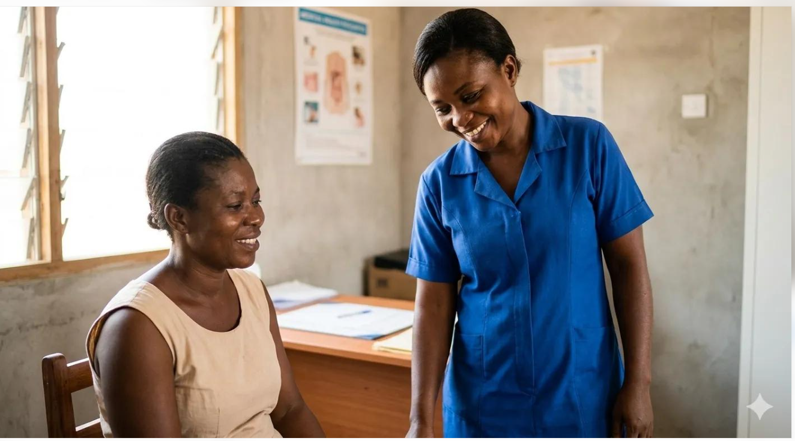

Our Mission
To promote compassionate, respectful and accessible healthcare through health education, preventive health awareness and community engagement, while upholding patient-centred values.
Discover who we are, what we believe in and our commitment to compassionate healthcare, health education and stronger communities in Kakuma, Turkana County, Kenya.

MediTrust Health Centre is a community-focused healthcare facility based in Kakuma, Turkana County, Kenya, with a commitment to compassionate, respectful and patient-centred care.
We believe everyone deserves to be treated with dignity and respect, receive clear and reliable health information, and be guided towards appropriate healthcare services.
Through health education, preventive health awareness and community engagement, we aim to support healthier individuals, stronger families and better-informed communities.
The principles that guide our commitment to better community health.
To promote compassionate, respectful and accessible healthcare through health education, preventive health awareness and community engagement, while upholding patient-centred values.
To build a healthier future where every individual and family can access reliable health information, make informed health decisions and contribute to stronger, healthier communities.
These values guide how we serve individuals, support families and engage with our community.
Treating every person with kindness, empathy and understanding.
Promoting honesty, accountability and professional responsibility.
Valuing every person's dignity, background and individual needs.
Striving for quality, continuous improvement and responsible care.
Believing in collaboration and shared responsibility.
Supporting health awareness and community wellbeing.
Knowledge is the foundation of better health. Explore our educational resources and discover practical ways to support healthier individuals, families and communities.
Explore Health Education →